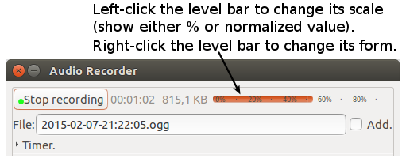

|
Timer commands can stop, start and pause recording on a given condition. The general syntax of the commands are start [at | if | after | on] condition stop [at | if | after | on] condition pause [at | if | after | on] condition The timer field can contain several commands and lines written in English. Press the [Save] button or CNTR + S keys to save the command text. Use # character to comment out unused lines. ConditionsClock time:This can stop or start the recording at given clock time. The time has format hh:mm:ss (hours:minutes:seconds) and you can either use the 24-hour clock or 12-hour notation with am or pm suffix (ending). These two timer commands will start recording at 09:30 pm. These commands will stop recording at 9 o'clock in the morning. The time is valid once a day. The command will fire again next day. Note. Use the colon ":" to distinguish clock time (hh:mm::ss) from time period or duration. Stop or pause recording on silence:Use the silence word to stop or pause recording when there is no particular input on the line. You can also give the silence duration/delay in seconds and signal level in decibel (dB), percent (%) or plain numeric value. The default silence (delay) is 3 seconds and the default audio threshold is 0.3 (0.3 = 30% = ca. -24 dB). Notice: If you use the silence word to stop recording, the recording will automatically continue after the condition becomes false (untrue). Some examples The time period/delay should be given in seconds, like
The audio threshold can be written in three ways:
Value between 0 - 1.0 = exp(dB/20). Activate recording on sound or voice:Use the sound, voice or audio words to start recording when the audio level rises over a given threshold. All these three words mean the same thing. The default threshold for audio volume is 0.0, so a slightest whispering will trigger the recorder. The default duration is also 0. This means that the recorder will not wait, but starts capturing immediately when the audio rises over the threshold limit. Examples The recording will automatically pause temporarily when audio drops under the threshold. Notice: The recorder cannot handle time delay in sound/audio/voice related commands well because it has no buffering capabilities. It will simply loose the audio during delay. Most often you should not give time delay for sound/audio/voice commands. Type only a threshold value. Study the above examples. Left-click the level-bar to change its value scale (%-scale from 0 - 100% or value from 0 to 1.0). Right-click the level-bar to change its form and style. File size:Stop or pause recording after certain file size. The file size must be an integer or decimal number. The size unit can be bytes, kB, MB, GB or TB. E.g this will stop recording when the file size reaches 500 KB. This will stop recording after 2GB or 12:00 pm. Time period:Stop, start or pause recording after given time period. The period or duration has syntax #h #m #s. Eg. this command will stop recording after 1 hour 20 minutes and 15 seconds. This will start recording after 22 minutes. And this will pause recording after 30 minutes or 20 MB. You can abbreviate the word hour with h, minutes with m or min, and seconds with s or sec. Several conditions on one lineYou can write many conditions in one line. Separate the conditions with | character. The values are then or'ed. For example, this will stop recording after 20 minutes or when filesize exceeds 1GB or if there is no input (the stream is empty, silent) in 5 seconds time. Another example. Commenting out linesUse # character to comment out (deactivate) lines.
E.g this command has no effect. Command-line options related to the timerYou can study the audio signal by starting the program with --debug-signal (or -d) option. The program will then print audio level in dB (decibel) and normalized [0 - 1.0] format. This example will start the program from a command line. Start a terminal window from desktop's main menu and type Then activate the timer. Click the checkbox to activate the timer and study the "normalized RMS" value. It will help you to set correct threshold for the silence and sound|voice|audio actions. Notice also that the amplitude-bar in the GUI shows audio peak value. It varies more than the RMS-value. Switch off when not neededSwitch off the timer (uncheck its checkbox) when you don't need it! This saves resources and CPU cycles. Control the recorder from command lineYou can easily control the program from a terminal window by using the -c or --command argument. Valid commands are: status, start, stop, pause, show, hide and quit. Some examples: The status command returns one of these strings: 'not running', 'on', 'off' or 'paused'. Resetting all settingsYou can reset all settings to default values by starting audio-recorder with --reset (or -r) argument.
audio-recorder --reset This is equivalent to For other options, type Control the GUI from keyboardYou can use these keys to control the recorder (when its window is active).
|